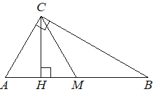

Авторский разбор и аудит предварительны; внешней экспертизы нет.
Модель автора: claude-opus-5-5 (opus; effort=low); в основных частотах: True ·
Впишите правильный ответ.
| Острый угол прямоугольного треугольника равен . Найдите величину угла между высотой и медианой проведёнными из вершины прямого угла Ответ дайте в градусах. |  |
КЭС: 7.1 Фигуры на плоскости
72
| ID / вход | Действие | Результат | Локальные KC |
|---|---|---|---|
| s1 · condition | Медиана CM к гипотенузе равна половине гипотенузы, поэтому CM=MB и треугольник CMB равнобедренный; угол MCB равен углу B | ∠MCB = 9° | kc1 |
| s2 · condition | В прямоугольном треугольнике CHB (CH ⟂ AB) найти угол HCB как дополнение угла B до 90° | ∠HCB = 81° | kc2 |
| s3 · s1, s2 | Так как H лежит между A и M (угол B острый меньше 45°), найти угол HCM как разность углов HCB и MCB | ∠HCM = 81° − 9° = 72° | kc3 |
[
{
"id": "m1",
"name": "Найти угол между высотой и медианой через равнобедренный треугольник и разность углов",
"step_ids": [
"s1",
"s2",
"s3"
]
}
]Вход: прямоугольный треугольник и медиана из вершины прямого угла. Операция: использовать равенство медианы половине гипотенузы, получить равнобедренные треугольники и равенство углов при основании. Граница: только медиана к гипотенузе прямоугольного треугольника.
{
"local_kc_id": "kc1",
"status": "needs_split",
"catalog_kc_id": null,
"evidence": [
{
"ref": "step:s1:action",
"quote": "Медиана CM к гипотенузе равна половине гипотенузы, поэтому CM=MB и треугольник CMB равнобедренный; угол MCB равен углу B"
},
{
"ref": "step:s1:result",
"quote": "∠MCB = 9°"
}
],
"context_refs": [
"condition",
"image:assets/a7beab0725f2db77ca74dda8.png"
],
"alternatives_checked": [
{
"catalog_kc_id": "literal_5140d12e0e85",
"reason": "Покрывает только равенство медианы половине гипотенузы (CM=MB), но не вывод равенства углов."
},
{
"catalog_kc_id": "isosceles_angles",
"reason": "Покрывает переход от CM=MB к равенству углов при основании, но не свойство медианы."
}
],
"rationale": "Кандидат объединяет два действия: свойство медианы к гипотенузе (CM=MB) и равенство углов равнобедренного треугольника CMB (∠MCB=∠B). Каждое имеет отдельный узел каталога.",
"proposal": {
"parts": [
{
"action": "Установить CM=MB по свойству медианы к гипотенузе",
"possible_catalog_kc_id": "literal_5140d12e0e85"
},
{
"action": "Из CM=MB получить ∠MCB=∠B",
"possible_catalog_kc_id": "isosceles_angles"
}
]
},
"blocking": false,
"issue_ids": []
}Вход: прямоугольный треугольник с известным острым углом. Операция: вычесть известный угол из 90°. Граница: треугольник с прямым углом.
{
"local_kc_id": "kc2",
"status": "match",
"catalog_kc_id": "literal_f5a787e19d0e",
"evidence": [
{
"ref": "step:s2:action",
"quote": "В прямоугольном треугольнике CHB (CH ⟂ AB) найти угол HCB как дополнение угла B до 90°"
},
{
"ref": "step:s2:result",
"quote": "∠HCB = 81°"
}
],
"context_refs": [
"condition"
],
"alternatives_checked": [
{
"catalog_kc_id": "literal_adbf18f11761",
"reason": "Разность углов с общей стороной, а не сумма углов треугольника."
}
],
"rationale": "Угол HCB найден по сумме углов треугольника CHB с прямым углом при H: 180°−90°−9°=81°; это частный случай определения узла о сумме углов треугольника.",
"proposal": null,
"blocking": false,
"issue_ids": []
}Вход: два угла с общей вершиной и общей стороной, известно взаимное расположение лучей. Операция: вычесть меньший угол из большего. Граница: требуется установить, что один луч лежит внутри другого угла.
{
"local_kc_id": "kc3",
"status": "match",
"catalog_kc_id": "literal_adbf18f11761",
"evidence": [
{
"ref": "step:s3:action",
"quote": "Так как H лежит между A и M (угол B острый меньше 45°), найти угол HCM как разность углов HCB и MCB"
},
{
"ref": "step:s3:result",
"quote": "∠HCM = 81° − 9° = 72°"
},
{
"ref": "image:assets/a7beab0725f2db77ca74dda8.png",
"region_description": "На основании AB точки в порядке A, H, M, B; лучи CH и CM исходят из C, CM лежит между CH и CB"
}
],
"context_refs": [
"step:s1:result",
"step:s2:result"
],
"alternatives_checked": [
{
"catalog_kc_id": "literal_f5a787e19d0e",
"reason": "Узел о сумме углов треугольника и смежности, здесь же вычитание углов с общей стороной CB."
}
],
"rationale": "Установлено взаимное расположение лучей CH, CM, CB и угол HCM получен вычитанием углов с общей стороной CB — полное соответствие определению.",
"proposal": null,
"blocking": false,
"issue_ids": []
}[]
[]
{
"author_path": "data/annotation/runs/2026-11-07-fipi-team-bogdan108-051-150/raw/author/018816.json",
"auditor_path": "data/annotation/runs/2026-11-07-fipi-team-bogdan108-051-150/raw/auditor/018816.json",
"accepted_after_review": null
}